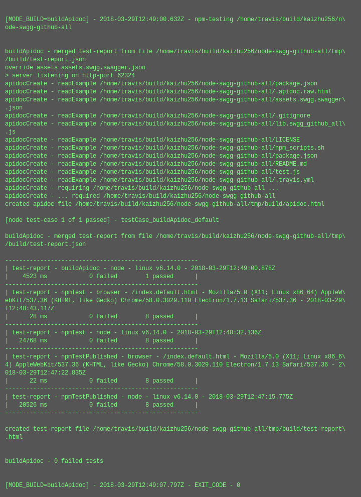
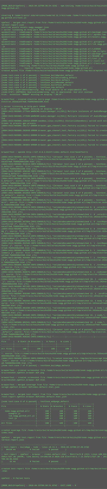
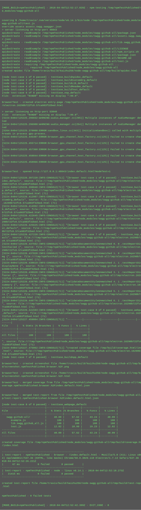

test-report for swgg-github-all (v2018.3.26-alpha)
summary
version-
2018.3.26-alpha
test date- 2018-03-29T06:48:18.225Z
commit info-
f099f08d0f3f20970144d2e8ce582add16161953 - add.subtag.collaborators
| total time-elapsed | total tests failed | total tests passed | total tests pending |
|---|---|---|---|
| 122851 ms | 0 | 33 | 0 |
1. buildApidoc - node - linux v6.14.0 - 2018-03-29T06:48:18.220Z

time-elapsed- 5773 ms
tests failed- 0
tests passed- 1
tests pending- 0
{kind=link}
| # | time-elapsed | status | test-case |
|---|---|---|---|
| 1 | 4507 ms | passed | testCase_buildApidoc_default |
2. npmTest - browser - /index.default.html - Mozilla/5.0 (X11; Linux x86_64) AppleWebKit/537.36 (KHTML, like Gecko) Chrome/58.0.3029.110 Electron/1.7.13 Safari/537.36 - 2018-03-29T06:48:00.611Z

time-elapsed- 24392 ms
tests failed- 0
tests passed- 8
tests pending- 0
| # | time-elapsed | status | test-case |
|---|---|---|---|
| 2 | 0 ms | passed | testCase_buildApidoc_default |
| 3 | 0 ms | passed | testCase_buildApp_default |
| 4 | 0 ms | passed | testCase_buildCustomOrg_default |
| 5 | 1 ms | passed | testCase_buildLib_default |
| 6 | 6 ms | passed | testCase_buildReadme_default |
| 7 | 0 ms | passed | testCase_buildTest_default |
| 8 | 0 ms | passed | testCase_nop_default |
| 9 | 3 ms | passed | testCase_webpage_default |
3. npmTest - node - linux v6.14.0 - 2018-03-29T06:47:49.331Z

time-elapsed- 34690 ms
tests failed- 0
tests passed- 8
tests pending- 0
{kind=link}
| # | time-elapsed | status | test-case |
|---|---|---|---|
| 10 | 4695 ms | passed | testCase_buildApidoc_default |
| 11 | 9571 ms | passed | testCase_buildApp_default |
| 12 | 1 ms | passed | testCase_buildCustomOrg_default |
| 13 | 1 ms | passed | testCase_buildLib_default |
| 14 | 1226 ms | passed | testCase_buildReadme_default |
| 15 | 1 ms | passed | testCase_buildTest_default |
| 16 | 0 ms | passed | testCase_nop_default |
| 17 | 17824 ms | passed | testCase_webpage_default |
4. npmTestPublished - browser - /index.default.html - Mozilla/5.0 (X11; Linux x86_64) AppleWebKit/537.36 (KHTML, like Gecko) Chrome/58.0.3029.110 Electron/1.7.13 Safari/537.36 - 2018-03-29T06:46:28.001Z

time-elapsed- 117000 ms
tests failed- 0
tests passed- 8
tests pending- 0
| # | time-elapsed | status | test-case |
|---|---|---|---|
| 18 | 0 ms | passed | testCase_buildApidoc_default |
| 19 | 0 ms | passed | testCase_buildApp_default |
| 20 | 0 ms | passed | testCase_buildCustomOrg_default |
| 21 | 1 ms | passed | testCase_buildLib_default |
| 22 | 2 ms | passed | testCase_buildReadme_default |
| 23 | 1 ms | passed | testCase_buildTest_default |
| 24 | 0 ms | passed | testCase_nop_default |
| 25 | 2 ms | passed | testCase_webpage_default |
5. npmTestPublished - node - linux v6.14.0 - 2018-03-29T06:46:21.095Z

time-elapsed- 122851 ms
tests failed- 0
tests passed- 8
tests pending- 0
{kind=link}
| # | time-elapsed | status | test-case |
|---|---|---|---|
| 26 | 2541 ms | passed | testCase_buildApidoc_default |
| 27 | 6930 ms | passed | testCase_buildApp_default |
| 28 | 0 ms | passed | testCase_buildCustomOrg_default |
| 29 | 1 ms | passed | testCase_buildLib_default |
| 30 | 0 ms | passed | testCase_buildReadme_default |
| 31 | 1 ms | passed | testCase_buildTest_default |
| 32 | 0 ms | passed | testCase_nop_default |
| 33 | 18006 ms | passed | testCase_webpage_default |